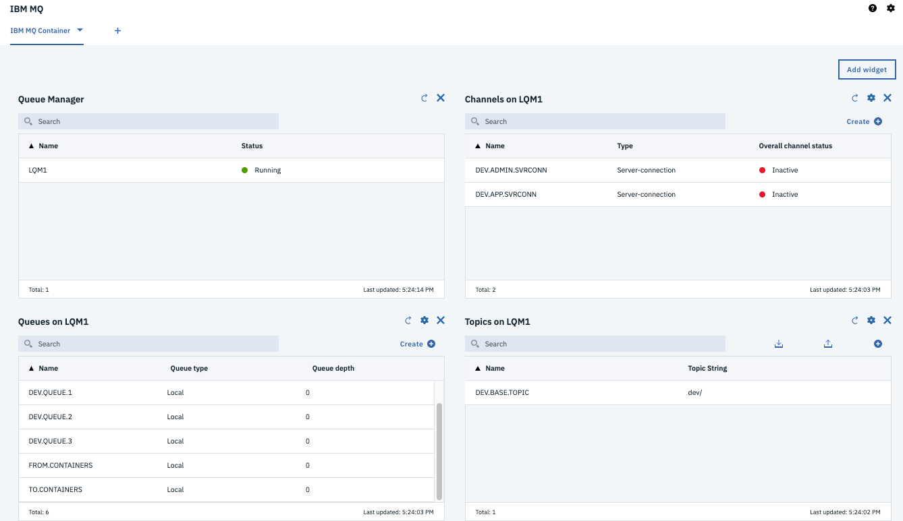

Run the solution locally
This is for development by running Db2 in docker on your laptop.
Run the Liberty server locally with DB2 and MQ in docker containers.
Pre-requisites
- Get docker and docker cli for your local environment
- Get docker compose
Creating the INVDB in DB2
Note
The creation of the INVDB database with the containers table and some test data should be done only the first time, or each time you delete the db2/database folder.
Go to the db2 folder and start the db2 server with the script:
./startDB2.sh # which is the same as running the ibmcom/db2 community edition docker run -it --name db2 --privileged=true -p 50000:50000 -e LICENSE=accept -e DB2INST1_PASSWORD=db2inst1 -e DBNAME=INVDB -v $(pwd):/home -v $(pwd)/database:/database ibmcom/db2
This will download a development docker image for DB2 and configure the INVDB database. The container table needs to be added using the following steps within the docker shell:
- Start the bash session within the db2 server
docker exec -ti db2 bash
- Then swap to
db2inst1user and use the scripts that were mounted under /home
su - db2inst1 cd /home/sql/inventory ./createDB.sh
The trace should look like: ``` INVDB Database Connection Information ... Containers table not found so let create it create table containers ( containerid VARCHAR(30) NOT NULL, type VARCHAR(20), status VARCHAR(20), brand VARCHAR(50), capacity DECIMAL, CREATIONDATE TIMESTAMP, UPDATEDATE TIMESTAMP, PRIMARY KEY (containerid) ) DB20000I The SQL command completed successfully. There is no data in inventory DB, let add some... INSERT INTO containers (containerid, type, status, brand, capacity) VALUES ('C01','Reefer','Operational','containerbrand',20), ('C02','Dry','Operational','containerbrand',20), ('C03','Dry','Operational','containerbrand',40), ('C04','FlatRack','Operational','containerbrand',40), ('C05','OpenTop','Operational','containerbrand',40), ('C06','OpenSide','Operational','containerbrand',40), ('C07','Tunnel','Operational','containerbrand',40), ('C08','Tank','Operational','containerbrand',40), ('C09','Thermal','Operational','containerbrand',20) DB20000I The SQL command completed successfully. ```
-
Exit the shell sessions. The database is created under the db2 folder, and it is git ignored.
-
Stop DB2 docker instance with
docker stop db2 - Tag the image of the container so we can reuse the same database.
ID=$(docker ps -l|grep db2|awk '{print $1}') docker commit --author="IBMCASE" $ID ibmcase/greendb2
This docker image will be used in the docker compose settings to run the solution locally. Also the ibncase/greendb2 is available in public docker hub.
Create the MQ image with the queue configuration
Note
Queue manager and queue data are saved in the filesystem. To avoid losing the queue manager and queue data, we use docker volumes. Volumes are attached to containers when they are run and persist after the container is deleted. The following command creates a volume name qm1data
Work under the mq-config folder.
cd mq-config
docker volume create qm1data
The remote MQ clients use a Channel to communicate with the MQ manager over the network. We need to create a virtual docker network to support this communication. The command below creates such network:
docker network create mq-network
The folder mq-config includes the 20-config.mqsc file to define the queues to be used to communicate with Kafka.
define ql('TO.CONTAINERS') define ql('FROM.CONTAINERS')
The goal is to take the IBM MQ development image and move this configuration file inside the image.
docker build -t ibmcase/mq .
For more information of the IBM MQ image see this note and how to use the MQ container.
The scripts runMQlocal.sh uses docker and the IBM MQ docker image to run MQ as a daemon. This is helpful when developing the JMS consumer and producer code, but we recommend to use the docker-compose to start both MQ and DB2.
Going to the console: https://localhost:9443/ibmmq/console/login.html to login using the admin user. See instructions in this note.

Build the jee-inventory webapp
mvn package -DskipIT
This will build the containerinventory.war file and prepare Liberty defaultServer without running the Integration tests.
Start the webapp with maven
To start the web app
mvn liberty:run
Point the browser to the following address:
- Verify the app is up and running http://localhost:9080/health
- Get the list of all containers: http://localhost:9080/containers
- Get a container using its ID:
http://localhost:9080/containers/C02 - Get the private api
https://localhost:9443/ibm/apiuse the admin user and password as defined in thesrc/main/liberty/config/server.xmlfile.
Start the solution using docker compose
Under the project folder, use the following command to start both DB2 and MQ
docker-compose up
The docker-compose.yml file defines the two services, one volume for MQ and the mq network.